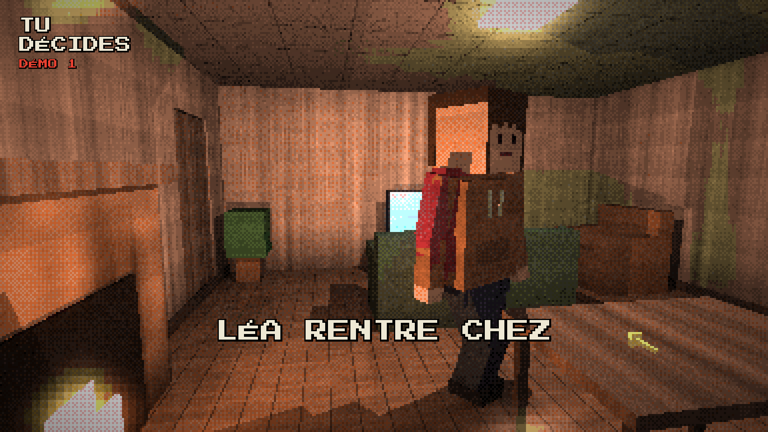

Grafik · prozedurale Erzählwelten
Eine Geschichte wird Szene, Kamera und Bewegung.
Ein eigener lokaler Studiomotor für prozedurale Figuren, Räume und Erzählungen. Szenenbeschreibungen verbinden Darsteller, Bildsprache, Ton und technische Qualitätskontrollen.
Das Projekt erleben
Bilder aus dem echten Motor
Die folgenden Bilder wurden mit dem mitgelieferten Python-Motor aus synthetischen Beispielszenen erzeugt. Szene und Zeitpunkt sind wählbar. Der Browser zeigt gespeicherte Motorbilder; ein neuer Renderauftrag wird nicht ausgeführt.

Vom Problem zur Umsetzung
Die Technik hinter dem Ablauf.
Beschreiben
Figuren, Aktionen, Orte und Kameras werden in einer gemeinsamen Szenenstruktur beschrieben.
Inszenieren
Eine gemeinsame Spiellogik bedient die Bildrichtungen PIXEL 3D und CONSOLE; Erweiterungen bleiben gezielt aktivierbar.
Prüfen
Geometrie, Kontinuität und Ausgabe werden geprüft. Standbilder lassen sich ohne Sprachdienst oder Videoexport reproduzieren.
Im Repository nachvollziehen
So ist der Code aufgebaut.
- hstudio/acting/ — Spiel und Kameraführung
- hstudio/engines/ — Python-Bildmotoren
- hstudio/voxelgpu/ — GPU-Übersetzung
- demo/bilder_erstellen.py — reproduzierbare Demobilder